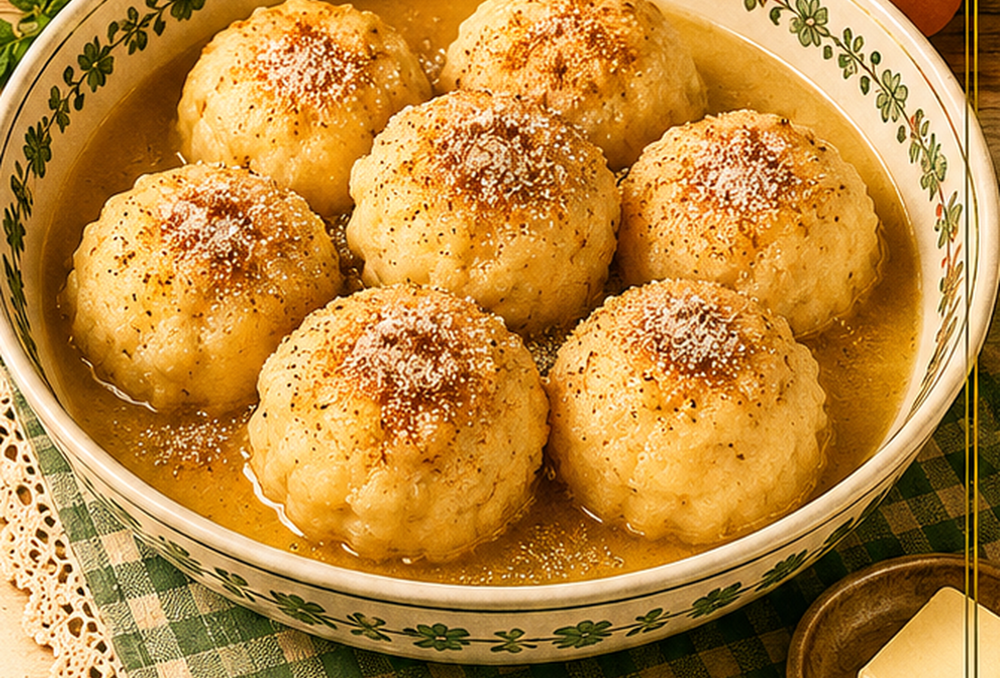

Karthäuser Klöße
Eine süße Speise aus altbackenem Brot, Milch, Ei, Zitrone, Zucker und Zimt.

Originale Überlieferung
Die Überlieferung nennt vier Brote oder Wecken, sieben Esslöffel Milch, ein bis zwei Eier, Zitronenschale, Zucker, Zimt und Fett. Das Brot wird mit der gewürzten Milch angefeuchtet, mit Ei gebunden und in Fett goldgelb ausgebacken.
Moderne Übertragung
Altbackenes Brot wird mit Zitronenmilch angefeuchtet, durch verquirltes Ei gezogen und in Fett gebraten. Zucker und Zimt kommen zum Servieren darüber.
Zutaten
- 4 Scheiben altbackenes Weißbrot oder 2 altbackene Brötchen
- 7 EL Milch
- 1–2 Eier
- abgeriebene Zitronenschale
- Zucker
- Zimt
- Fett oder Butter zum Ausbacken
Zubereitung
- Milch mit etwas Zucker und Zitronenschale leicht erwärmen.
- Brot in dicke Scheiben schneiden und kurz mit der Milch anfeuchten.
- Eier verquirlen und die Brotscheiben darin wenden.
- In heißem Fett von beiden Seiten goldbraun ausbacken.
- Mit Zimt und Zucker bestreuen und warm servieren.